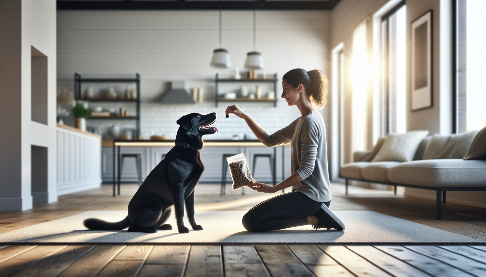

If you have ever thought, “I know my dog needs training, but I just do not have time,” you are not alone. Many dog owners, new puppy parents, and rescue adopters imagine training has to happen in long, formal sessions to work. In reality, some of the most effective dog training happens in short, consistent bursts. A simple 15-minute daily routine can dramatically improve your dog’s focus, manners, confidence, and relationship with you.
The key is not intensity. It is consistency, clarity, and repetition. Dogs learn best when training is predictable, rewarding, and easy to understand. Science-backed positive reinforcement methods help dogs repeat behaviors that earn rewards, while short sessions prevent frustration and mental fatigue. Whether you live with a brand-new puppy, an energetic adolescent, or an adult rescue still learning the rules, this routine can meet your dog where they are and help them succeed.
Below, you will find a practical 15-minute daily dog training routine that can transform almost any dog over time. It is simple enough to stick with, flexible enough for real life, and powerful enough to build lasting habits.
Dogs do not measure progress by the length of a session. They measure it by repetition, timing, and outcomes. A focused 15-minute training routine works because it fits how dogs learn. Short sessions allow your dog to stay engaged, earn frequent rewards, and end on a positive note. That means better retention and less burnout for both of you.
Consistency also creates clarity. When your dog practices the same foundational skills every day, those skills become easier to access in real life. Sitting politely before meals, checking in on walks, settling on a mat, and responding to their name all become habits instead of lucky moments.
This approach is especially helpful for:
Fifteen minutes is also realistic. If a routine feels doable, you are far more likely to keep doing it, and consistency is what truly transforms behavior.
Good training starts before you ask for a single cue. Set up your environment so your dog can win. Choose a quiet area with minimal distractions, especially in the beginning. Have soft, high-value treats ready in pea-sized pieces. If your dog is toy-motivated, keep a favorite toy nearby too.
Use a marker signal, such as a clicker or a consistent word like “yes,” to tell your dog the exact moment they did something right. This speeds up learning by making your communication precise. Reward quickly after the marker so your dog connects the behavior to the payoff.
Keep your expectations realistic. A puppy may only manage a few seconds of focus. A rescue dog may need time to feel safe enough to engage. An excitable adolescent may need easier versions of skills at first. Progress is not always linear, but daily practice adds up.
A few ground rules make this routine much more effective:
This routine is divided into five short blocks. You can do it all at once or split it into mini-sessions throughout the day. The structure matters more than the exact timing.
Start by rewarding your dog for choosing to pay attention to you. Say their name once. When they look at you, mark and reward. Take a few steps away and reward them for following. If they offer eye contact on their own, mark and reward that too. This warm-up teaches your dog that checking in with you is valuable.
Work on one or two foundational behaviors such as sit, down, touch, or come. Keep repetitions short and successful. For example, ask for a sit, mark the instant your dog sits, and reward. Then reset. If your dog is learning recall, practice only from short distances indoors at first so they can succeed repeatedly.
This is where training starts to change daily life. Practice behaviors your dog needs outside formal sessions: waiting at doors, sitting for the leash, leaving food alone until released, or going to a mat. Reward calm choices. These practical manners are what many owners really mean when they say they want a “well-trained dog.”
Teach your dog that patience pays off. You might hold a treat in your hand and reward when your dog stops pawing and backs off. You can also practice a short stay, a settle on a bed, or a simple pattern game like rewarding your dog for staying by your side for a few steps. These exercises build emotional regulation, which is often just as important as obedience.
End with something easy and soothing. Ask for a hand target, a sit, or a down your dog knows well. Scatter a few treats on the floor for sniffing or reward your dog for relaxing on a mat. Finishing calmly helps your dog transition back into the day without staying over-aroused.
If you are wondering which behaviors matter most, focus on the ones that improve communication and daily life. You do not need a long list of fancy tricks. A few core skills can change everything.
These are not just commands. They are communication tools. They help your dog understand what to do instead of guessing, jumping, pulling, barking, or grabbing.
One reason this daily routine works so well is that it can be adjusted to fit your dog’s history and developmental stage.
For puppies: Keep everything very short and upbeat. Use the routine to teach handling, name recognition, potty-trip transitions, and calmness between bursts of energy. Puppies need lots of sleep, so train when they are fresh, not wild and overtired.
For rescue dogs: Prioritize predictability and trust. A newly adopted dog may not be ready for much pressure. Focus on engagement, simple cues, and rewarding calm behavior. Let your dog learn that training is safe and rewarding. Confidence often comes before precision.
For adult dogs: Do not assume it is too late. Adult dogs can learn beautifully. If they have practiced unwanted behaviors for a long time, start with easier setups and reward heavily for the choices you want. New habits are built through repetition, not age.
For fearful or reactive dogs, this routine can still help, but behavior challenges involving fear, aggression, or severe anxiety may require a certified professional trainer or veterinary behaviorist for a personalized plan.
Even a great routine can stall if a few common errors creep in. The good news is that they are easy to fix once you know what to watch for.
Remember, training is not about catching your dog being wrong. It is about making the right behavior easy, rewarding, and worth repeating.
With a 15-minute daily dog training routine, many owners notice changes within a couple of weeks. Dogs often begin offering more eye contact, responding faster to cues, and settling more easily at home. Over time, the bigger transformation is not just obedience. It is a stronger relationship.
Your dog starts to understand how to succeed in your world. You become more predictable, more rewarding, and easier to trust. That reduces frustration on both sides. Training stops feeling like conflict and starts feeling like teamwork.
Will 15 minutes solve every behavior issue overnight? No. But it creates momentum. It lays the foundation for better leash walking, calmer greetings, improved recall, and more confidence in new situations. Small daily wins turn into major long-term change.
You do not need marathon training sessions to transform your dog. You need a plan you can actually follow. A science-backed, positive 15-minute daily routine gives your dog structure, mental exercise, and clear communication. It helps puppies learn faster, rescues settle in, and adult dogs build better habits.
If you keep it short, rewarding, and consistent, this routine can become one of the most powerful tools in your dog training toolkit. Start today with just a few minutes of connection, a couple of simple skills, and a calm finish. The results may surprise you.
Get our full Dog Training eBook series — new titles added weekly.